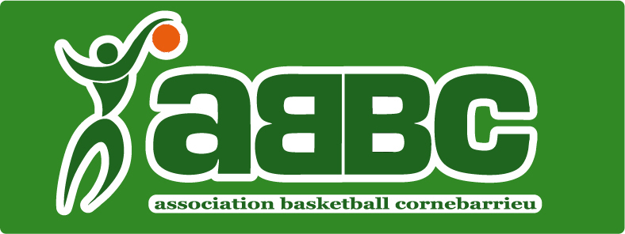
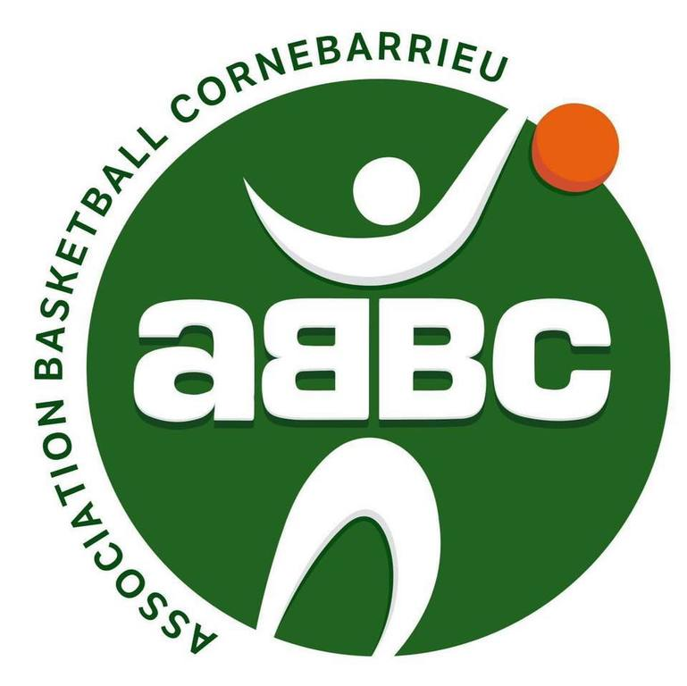

Saison 2026-2027
Association Basket‑Ball Cornebarrieu
180+ licenciés et 17 équipes des U7 aux Seniors. Du premier dribble à la Nationale, le basket se vit ici.

Ce week-end
Toutes les équipes et leurs classementsBienvenue à l'ABBC
Nous contacterDepuis plus de quarante ans, l'Association Basket-Ball de Cornebarrieu fait vivre le ballon orange en Haute-Garonne, du baby-basket à la Nationale 3.
Nos 180 licenciés s'entraînent au gymnase municipal autour de valeurs simples : le respect, le collectif et le plaisir de jouer. Chaque catégorie a sa place, du loisir à la compétition.
Joueur, parent, bénévole ou partenaire — il y a un maillot pour vous à l'ABBC.
La vie du club
Toutes les actualitésChargement des actualités…
Les prochains rendez-vous
Tout l'agendaChargement de l'agenda…
Rejoignez le club
pour la saison 2026-2027
Les inscriptions sont ouvertes à toutes et tous, dès 5 ans, du loisir à la compétition. Une séance d'essai est possible avant de s'engager.